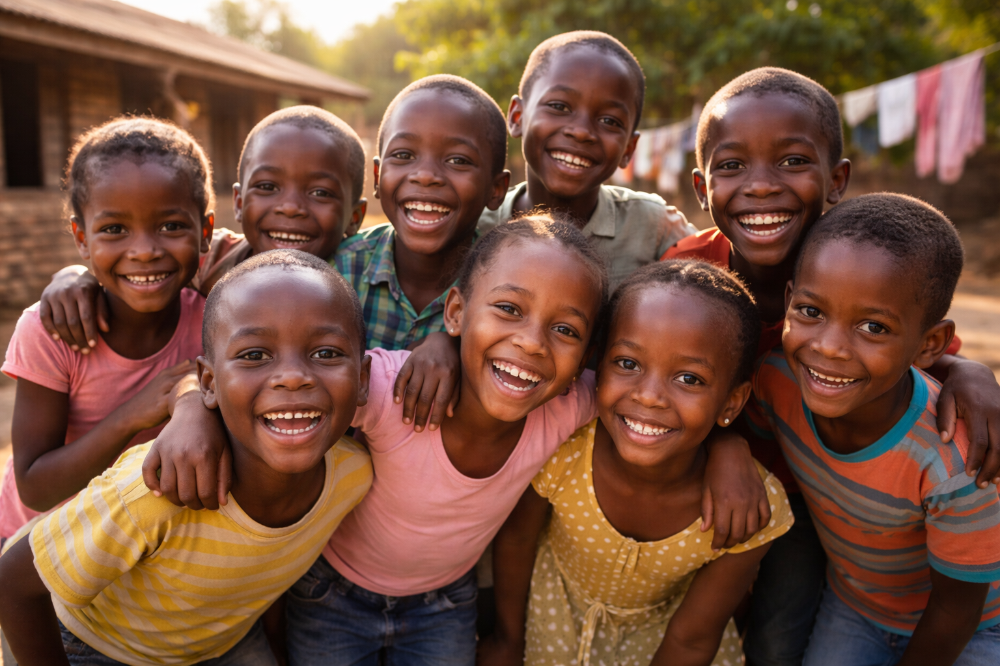
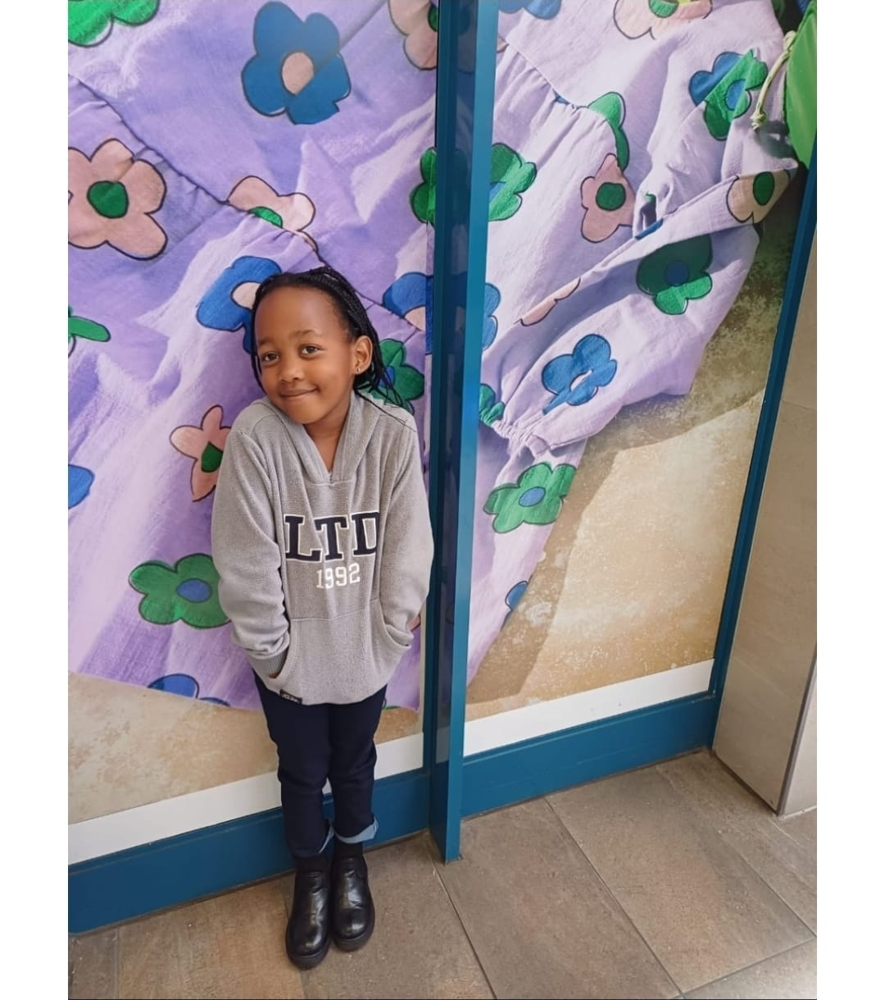
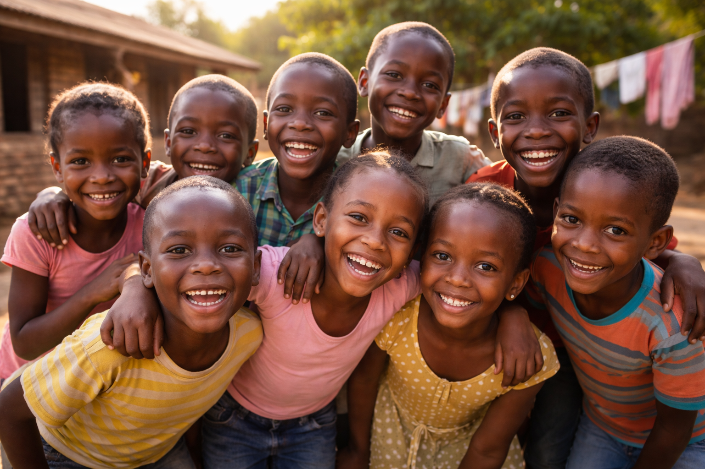
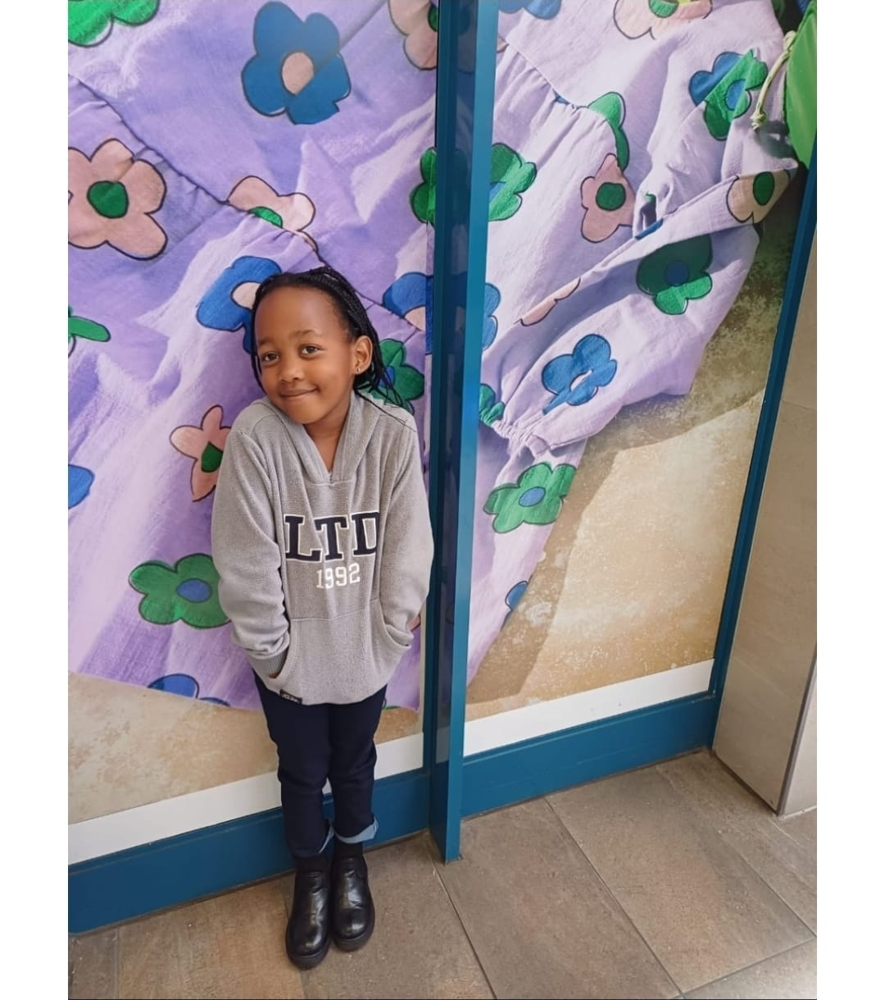

Black Phoenix Funeral Home
Black Phoenix Funeral Home
Black Phoenix Funeral Home
Black Phoenix Funeral Home
At Black Phoenix Funeral Home, we believe that no business can survive as an island. Guided by our core ethos of Empathy, Care, and Dignity, giving back to the community is an integral part of who we are and how we operate.
We are proud partners of the Siyamthanda Hope Foundation, an organisation dedicated to providing support services to families with children who are terminally ill due to cancer. The foundation focuses on offering comfort, guidance, and practical support during one of the most painful journeys a family can face.
Through this partnership, Black Phoenix Funeral Home provides free funeral services, including ancillary funeral and advisory services, to affected families. Our aim is to relieve financial and emotional pressure during times of profound loss, while ensuring that every child is laid to rest with dignity and respect.
This foundation is deeply personal to us. We have experienced the pain of losing a child to cancer—Siyamthanda Bonolo Khumalo, who was just 7 years old. Her journey and legacy inspired the creation of the Siyamthanda Hope Foundation.
To learn more about the Siyamthanda Hope Foundation or to make a donation, please visit: www.shrp.co.za
 


